This demo should take about 5 minutes.
Explain the use of Shared project (vs. portable projects) and Nuget packages.
Hyper-V enabled PC. Required for the Visual Studio UWP and Visual Studio Android emulators.
Internet connection is required in order to setup and run the demos.
You will need Visual Studio 2015/ or Community edition with Update 3
To download Visual Studio 2015 Community edition, https://www.visualstudio.com/vs/mobile-app-development/
Visual Studio Android emulator: https://www.visualstudio.com/vs/msft-android-emulator/
If you encounter issues with connecting Visual Studio debugger with the Visual Studio I would recommend following the steps from this blog article: http://dotnetbyexample.blogspot.ca/2016/02/fix-for-could-not-connect-to-debugger.html
(Optional) Mac for compiling and run the iOS projects. Mac is also required to use the XCode designers within Visual Studio for PC or Mac.
It is recommended that ahead of the session, you locate the starting project mentioned in the first few steps, open it, do a rebuild on it, and close it. This brings in the NuGet packages used.
Go to the Solutions folder with this content, locate the Demo2.2.zip file, extract it to a new folder under your Documents folder.
Open up the solution file under the Start folder.
This logically continues from Demo2.1 but with a starting solution prepped for the demo. This solution has been updated with the addition of folders and the required Nuget packages. We will be using folders to organize the projects and give the audience a clear idea of the purpose of each of the projects, add in a shared project (and compare it to the portable projects) and explain the Nuget packages used.
Explain, that the solution has been pre-populated with Xamarin.Forms. The new GPSImageTag is the project which will leverage Xamarin.Forms to build our shared UI code. The other projects are the platform heads which are created by default.
Now briefly demonstrate how they were added. Bring up the pop menu locate the add option (1). Next select the add New Project option (2). Next, select the Cross-Platform in the project template list (3). Now, select the Blank Xaml App (Xamarin.Forms Portable) template (4). Next step, is we give the new project a name of GPSImageTag (5). Finally, click the cancel button (6), but we are just demonstrating what was done to add in these new projects.
We need to remove both the GPSImageTag.Windows and GPSImageTag.WinPhone projects. First, select the two projects GPSImageTag.Windows and GPSImageTag.WinPhone projects (1). Next, bring up the pop menu and select Remove option (2).
Now, we need to organize our solution by moving the Xamarin.Forms heads into the solution folder Apps > Xamarin.Forms > Heads. Use the mouse and drag the following 3 projects GPSImageTag.Droid, GPSImageTag.iOS and GPSImageTag.UWP into the folder Apps > Xamarin.Forms > Heads (1).
Next step, is to move the final project GSImageTag into the solution folder Apps > Xamarin.Forms > UI. Use the mouse and drag the GPSIamgeTag project into the folder Apps > Xamarin.Forms > UI (1).
The solution will be using NuGet packages to help with Camera features and platform dialogs. Using these plugins saves us time and abstracts the platform specifics for this functions. The NuGet packages have already been added to the project we just show the audience the NuGet manager and the packages that were added to the solution. Select the Solution file (1). Next, bring up the pop menu and select he Manage NuGet Packages for Solution option (2).
The first Xamarin plugin we want to show is the Xam.Plugin.Media. This plugin abstracts the platform camera features and gives a common API interface for us to use to access the camera features. Click on the Installed heading and use the search term Xam.Plugin.Media (1). Point out version of the plugin being used (2). Next show that the plugin has been installed in the GPSImage.Core project listed as Portable\Core\GPSImageTag.Core. It is also installed into the heads. It works across all the platforms and is compatible with the Portable class library references by all of the head projects. Last we can point out the plugin details (4).
The next plugin we want to show is the Xam.Plugin.Connectiivity. This plugin provides a common interface across each of the platforms for checking network connection. Click on the Installed heading and use the search term Xam.Plugin.Connectivity (1). Point out the version of the plugin being used (2). Next show that the plugin has been installed in the GPSImage.Core project (and the head project) (3). Last we can point out the plugin details (4).
In Solution Explorer, explain that we have the newly added Portable Class Library under the UI folder. Like our other Portable Class libraries this is compatible with and is referenced by all the platform-specific head projects. This one also introduces and has a dependency on the Xamarin.Forms share UI framework. With the NuGet manager open we need to look for Xamarin.Forms. Click on the Installed heading and use the search term Xamarin.Forms (1). Point out the version of the plugin being used (2). Show that it is used by the UI Portable Class library GPSImageTag. It’s important to point out that it’s best practice to update the Xamarin.Forms core libraries. It provides updates for when Apple, Google and Microsoft release new APIs for the platforms. Plus, updating the Xamarin.Forms core library provides the necessary fixes to work with each of the platforms. Next show that the plugin has been installed into each of the platform heads (3). Last we can point on the plugin details (4).
The last Xamarin plugin is AcrDialogs . This plugin provides a common interface across each of the platforms for user dialog screens. Click on the Installed heading and use the search term Acr.UserDialogs (1). Point the version of the plugin being used (2). Next show that the plugin has been installed into each of the platform heads (3). Last we can point on the plugin details (4). Explain that this plug-in is specific to the platforms and not used in the Portable Class Library.
Not all the assemblies used in our project can be used within the Portable Class profile being used within our solution. These types of assemblies require specific platform code to function. In this example it’s the dialogs that are created in each of the target platforms that require different APIs.
Fortunately, we can still have common code used across each platform and leverage the Nuget package Acr.UserDialogs. We do this with a Shared project. First we need to select the Xamarin.Shared folder (1). Next, bring up the pop menu and select the Add option (2). Next, select the New Project option (3).
Next, use the term “Shared” to search (1) for the Shared Project template (2). Name the new project GPSImageTag.Shared.API (3). Finally, click on the OK button (4).
Now, we need to add the code files to the new project “GPsImageTag.Shared.API”. The files will be located in the Documents > Demo2.2 > SRC > Start > Code Files> Shared. To add the files, bring up the pop menu (1). Next, select the Existing Items options (2). Select all the file DialogService and click on the Add button (3). This file will be used by all the platforms shortly.
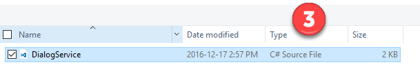
In this step we need to set the project references in platform-specific UI head projects. Repeat the following 3 steps for each project GPSImageTag.Droid, GPSImageTag.iOS, and GPSImageTag.UWP. For each project select the reference group heading (1). Next bring up the pop up menu and select Add Reference option (2).
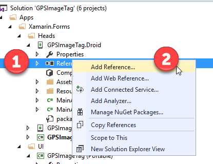
Now, enable the reference to the GPSImageTag.Core project (1). Then, click on the Shared Project folder (2).
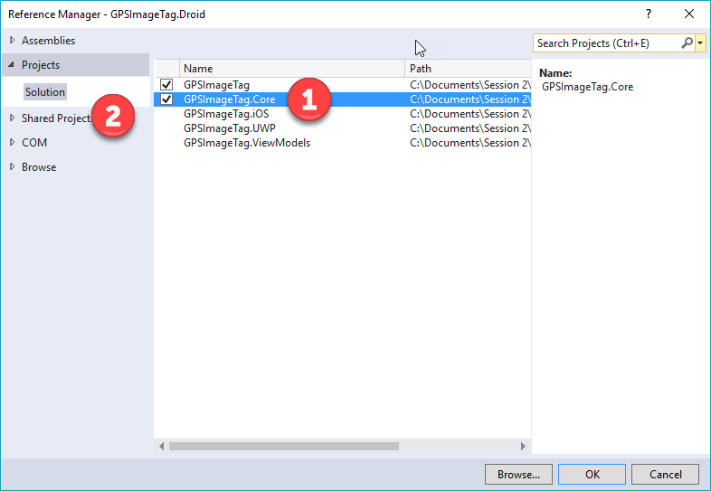
Next, enable the reference to the GPSImageTag.Shared.API (1). Finally, click on the OK button (2).
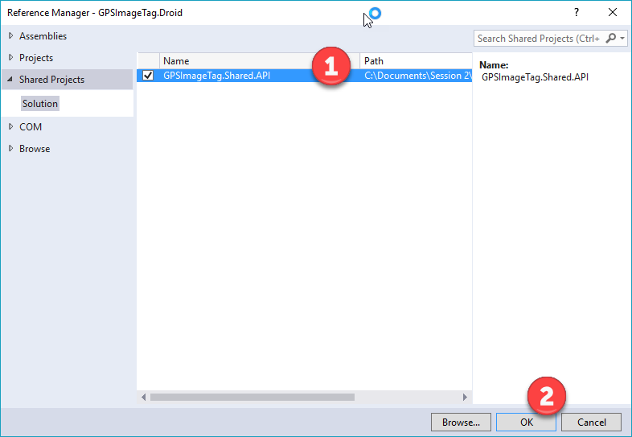
Explain what just happened. By adding the reference to a shared project, we are including code files of the shared project code in every project that references it. To be clear the Portable Class libraries are independently built DLLs referenced by platform-specific projects, where the shared project is code that builds as part of projects that reference it, as if all the code files has been copied under each project. A shared project does not create it’s own independent DLL.
Under the shared project, open the file DialogService.cs. Note that in the top-left corner you’ll see a drop-down that allows you to see how the code looks in the context of each of the references platform-specific head projects.
Now, let’s set the project references for the GPSImage PCL project. Select the reference group heading (1). Next bring up the pop up menu and select Add Reference option (2).
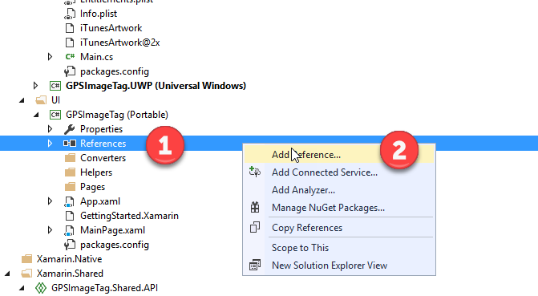
Next, enable the reference to the GPSImageTag.ViewModels (1). Finally, click on the OK button (2).
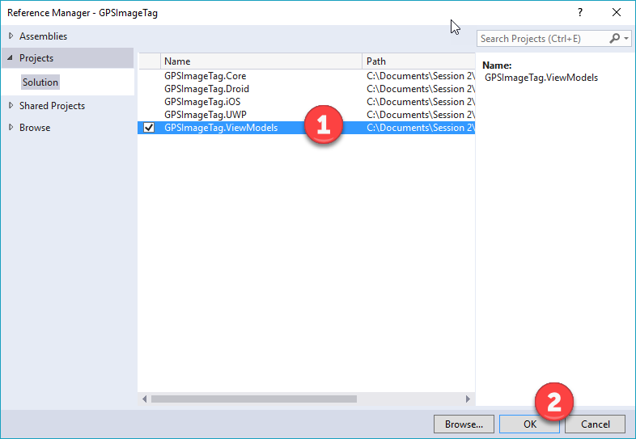
Now that the project references are setup. Let’s set a basic camera page to test the solution. For this step, we need to remove the boilerplate code that’s added to the GPSImageTag project. Select the following files App.Xaml, GettingStarted.Xamarin and MainPage.xaml (1). Bring up the pop menu and select the Delete option (2).
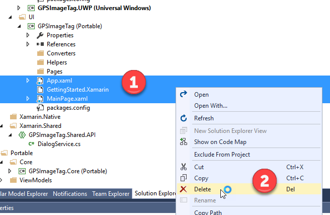
Next, we need to add in the UI files into the GPSImageTag. First, select the GPSImageTag project (1). Bring up the pop menu and select the Add option (2). Select the Existing Item option (3).
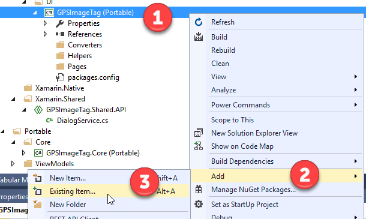
Add in the 2 files App.cs and App.xaml.cs located in the in the Demo2.2 > Start > Code Files > UI (1).
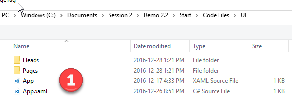
Select the App.xaml.cs file in the GPSImageTag project. On the properties for the file set the Build Action to Embedded Resource. Remember this is not the same file type as found in the Windows 10 UWP.
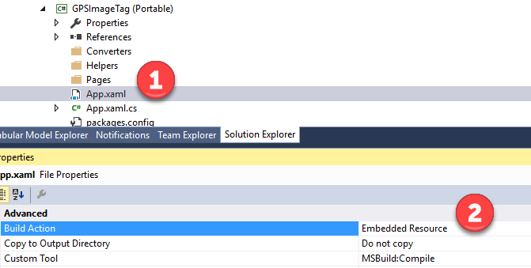
Now we need to add in the pages for the app. First, select the Pages folder in the GPSImageTag project (1). Bring up the pop menu and select the Add option (2). Next, select the Existing Item option (3).
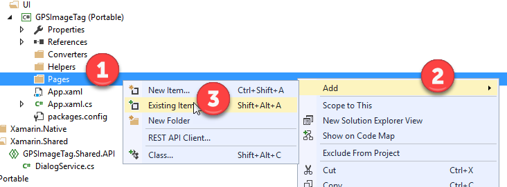
Add in the 2 files CameraPage.cs and CameraPage.xaml.cs located in the in the Demo2.2 > Start > Code Files > UI > Pages folder (1).
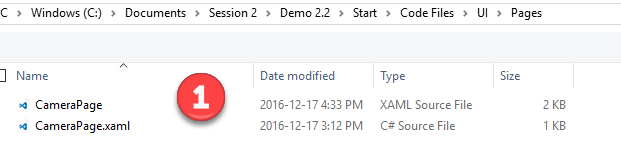
Again, we need to the set the build Action on the CameraPage.xaml (1). Set the Build Action to Embedded Resource (2).
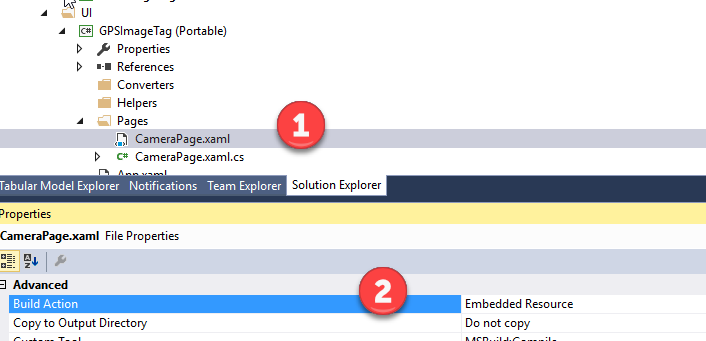
Now, we need to add in the helper classes into the GPSImageTag project. This provides the style to the application. First, select the Helpers folder in the GPSImageTag. Next, bring up the pop menu and select the Add option (2). Next, select the Existing Item option (3).
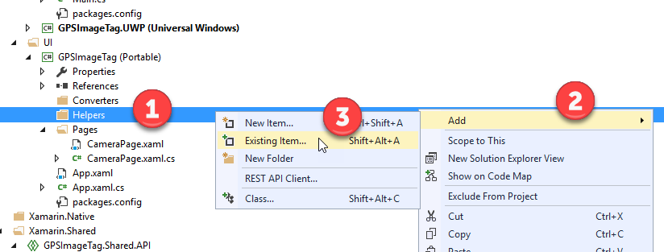
Select the Colours.cs file located in the Demo2.2 > Start > Code Files > UI > Helpers folder (1). Click the Add button
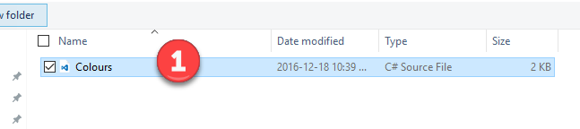
Now, we need to add the Converters to the GPSImageTag project. The converter we will be adding helps convert the image file bytes to a file stream object used by the UI binding. First, select the Converters folder in the GPSImageTag folder (1). Next, bring up the pop menu option and select the Add (2). Finally, click the Existing Item option (3).
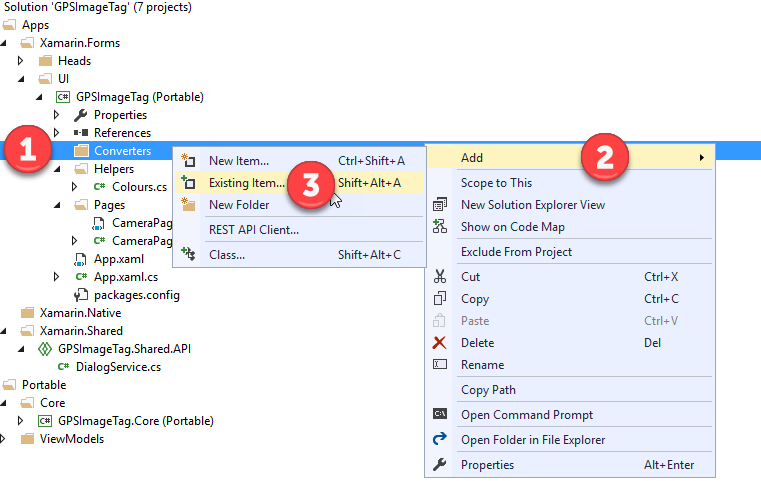
Now, select the ByteArrayToImageSourceConverter.cs and click the Add button (1).
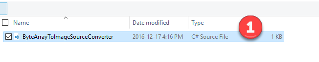
Now, we need to setup code within each of the targeted platforms to register the services. First select the file MainActivity.cs in the GPSImageTag.Droid project (1). Next, bring up the pop menu and select the Delete option (2).
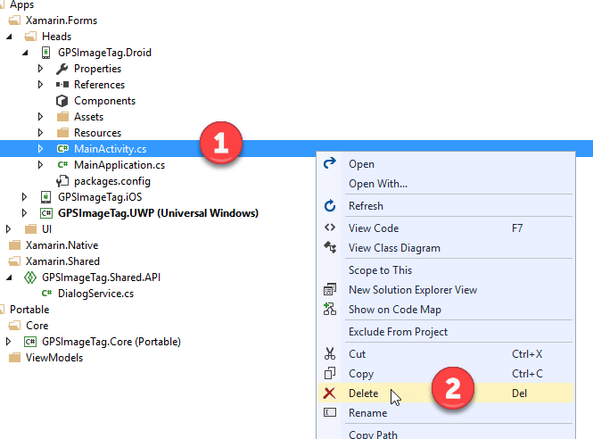
Now we need to add a new file to GPSImageTag.Droid project. First, select the GSPImageTag.Droid project (1). Next, on the pop menu click the Add option (2). Next, click the Existing Item option (3).
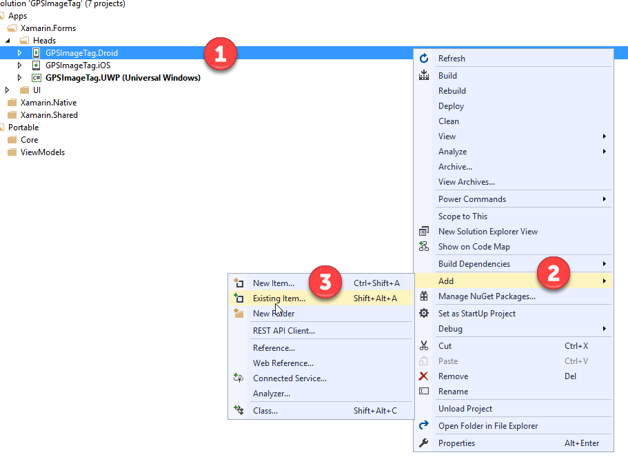
Now let’s add the updated MainActivity.cs file located the Documents > Demo2.2 > SRC > Start > Code Files> UI > Heads > Android and click on the Add button (1).
Open up MainActivity.cs and show that we are registering the services.
Next, we need to update the iOS project head as well. Select, the AppDelegate.cs file in the GPsImageTag.iOS project (1). Next, select Delete option in the pop up menu (2).
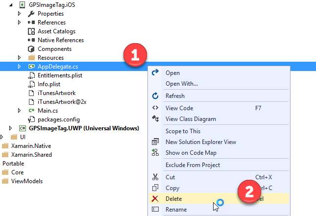
Now we need to add the updated file back into the GPSImageTag.iOS project. First, select the GPSImageTag.iOS project. Next, on the pop menu select the Add option (2). Finally, select the New Item option (3).
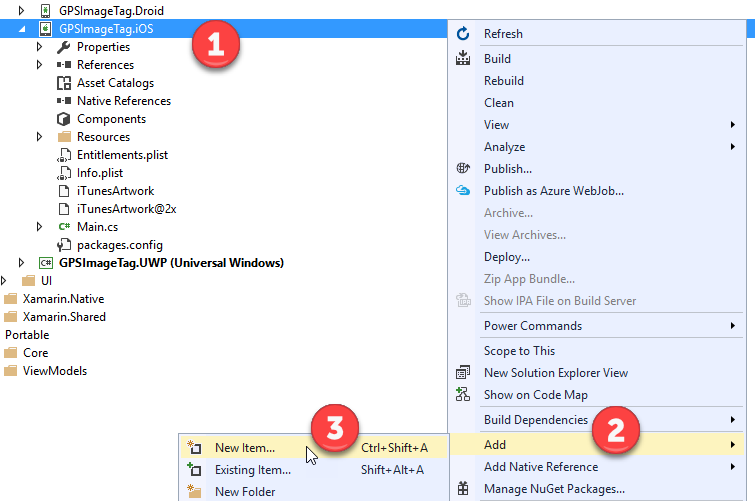
The file we are adding in the AppDelegate.cs file located in the Documents > Demo2.2 > SRC > Start > Code Files> UI > Heads > iOS and click on the Add button (1).
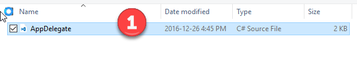
Open up AppDelegate.cs and show that we are registering the services.
Now, we need to update the UWP project head as well. Select the App.xaml file in the GPSImageTag.UWP project (1). Next, select the Delete option (2).
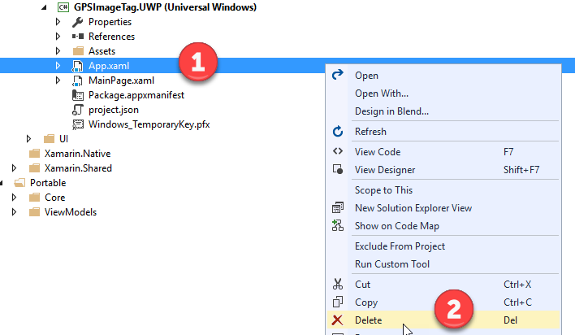
The files we are adding is the App.xaml and App.xaml.cs files located in the Documents > Demo2.2 > SRC > Start > Code Files> UI > Heads > UWP and click on the Add button (1).
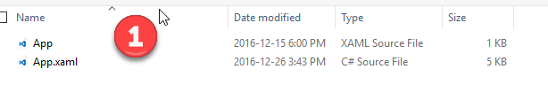
Next, select the App.Xaml file located in the GPSImageTag.UWP (1). Next, set the Build Action to ApplicationDefinition (2).
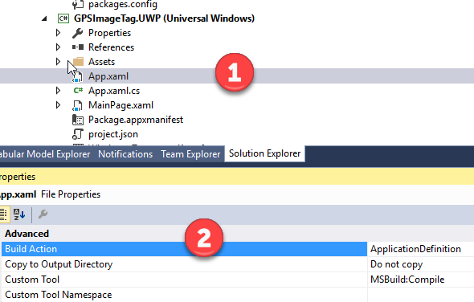
Open up App.xaml.cs and show that we are registering the services.
Before running the application, we need to configure the build configuration on the UWP project head. Select the Debug drop down menu option (1). Next, click the Configuration Manager option (2).
By default, Xamarin.Forms disables the build and deploy action on the GPSImageTag.UWP. Enable both options (1). Next, click the close button (2).
Hit Rebuild the solution.
If you encounter the following error message “CS5001 Program does not contain a static ‘Main’ method suitable for an entry point” perform a clean solution and then rebuild.
Hit F5 to run the UWP project head.
Next, click on the Take Photo button (1). On the camera screen click the camera button (2).
Recap what was accomplished in the demo.